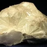

ManuscriptCorrespondence GrimoireCorrespondence GrimoireDigestive System☆SaveTypeBodyMinerals12BerylChrysocollaGreen JasperIron PyriteLibyan Gold TektiteMontebrasiteOcean JasperOrange TourmalinePoppy JasperPyrope GarnetPyrophylliteRed JadeOils15Ambrette Seed Essential OilAngelica Root Essential OilAngelica Seed Essential OilAnise Essential OilBasil Essential OilBay Laurel Essential OilCaraway Essential OilCardamom Essential OilCopaiba Balsam Essential OilCostus Essential OilDill Seed Essential OilDill Weed Essential OilFrankincense Essential OilGarlic Essential OilStar Anise Essential OilShow all 15Other Correspondences8GallbladderIntestinesLiverPancreasSacral ChakraSpleen⚡Metabolism🧘BodyPlants6Bay LaurelCalamusCarawayCardamomCassiaCopaiba BalsamRituals2🌙Moonwater Healing Potion🦴Pig-foot Digestive Healing Spell
 Digestive System
Digestive System